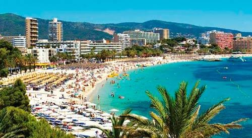
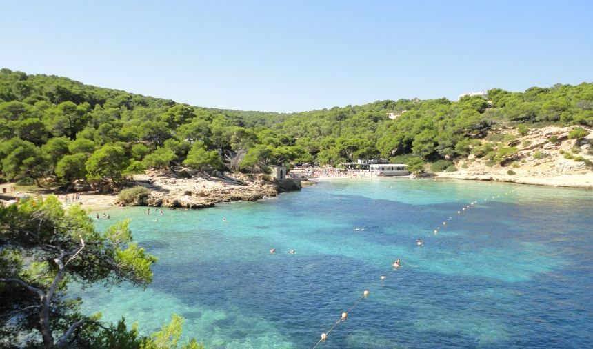

Welcome To The Balearic Island.
 Here you are going to know about Mallorca and what makes it the best spot for summer.
It may be said that the history of Majorca (Mallorca) is as long as its coastline. Were it not for the 5,547km (3,439 miles) of coast, we can be very sure that the island's past, present and future would be very different. Majorca (Mallorca), like other major islands of the Mediterranean, has attracted a cornucopia of conquerors, invaders, settlers and tourists, who have all contributed to its richness and vital history.
The formation of the Baleares islands is assumed to have taken place around 150 million years ago. At first, Majorca (Mallorca) was joined to the peninsula as an underwater island. One hundred and fortynine million years later, more or less, its present configuration came into being. Scrub forests comprising pine, rosemary, wild olive, lentiscus and dwarf fan palms were the island's main vegetation. Rockrose and lavender predominated in the sierra.
The sparse vegetation supported only a few animals. The smallest were field mice and wood shrews; the largest, the civet cats. Birds, on the other hand, have always been plentiful. Even though their habitat is under constant threat, counting the migrators and a few indigenous species, they number today well over 2,000 species. But of all the non-human species on Majorca (Mallorca), it is only the pine tree which isn't in decline. As for home sapiens, the present population stands at 600,000, and is increasing at a frightening rate.
Rainfall on the island is slight, varying between 1,400mm (55in) in the mountains to only 300mm (11.8in) on the southern plain. The winds blow principally during the winter and spring, when they are predominantly out of the north (the Tramuntana) and the southwest (the Llebeix). The southeast Sirocco brings with it red sand from the deserts of Africa which, if nothing else, seriously irritates the island's clean-car owners.
For most Majorca Mallorcans, history didn't really begin until the Catalans retook the island from the Moors in the 13th century. On the other hand, experts date the first islanders to between 1300 and 1000BC. Even though the earliest people obviously carried on primitive but active trade with others around the western Mediterranean, the quantity of arms found in their early dwellings shows that the island still had a long way to go before becoming the 'Island of the Calm'.
Phonetian HeadstoneBecause of the location of the archipelago. the Balearic islands found themselves on the great trading routes that criss-crossed the Mediterranean Sea. Eivissa (Ibiza) became an important commercial center for first the Phoenicians, then the Carthaginian traders. While Majorca (Mallorca) played only a minor part in these 8th- and 7th-century cultures, there are references in classical texts to Majorca (Mallorca)n honderos (stone slingers) fighting for the Carthaginians in the Punic wars.
However, The real History of Mallorca city is an uncertainty
Many believes that Mallorca was born during the Roman Empire foundation in 123 BC after many Invaders have been driven out by the hands of the Roman general Quintus Cecilius Metellus. The street of San Roque and the street of the General Study were the old axes of the thistle and decumanus of the city and in its intersection there was the forum, neuralgic point of the Roman city. Therefore, the area of this first city corresponds to the current neighborhood of the Almudaina, which was fortified. A door of this wall is conserved: the one of the street of the Almudaina.
The period between the fifth and ninth centuries is known by historiography as that of the dark ages. However, this period has documented the arrival of a Jewish community in Mallorca, it remained in Palma throughout the successive periods of the history of the city.
In 902 the Balearic Islands were incorporated into the Umayyad emirate of Cordoba. In the beginning the Andalusí society occupied the Roman city, that now would take the name of Madina Mayurqa. In the tenth century the city was provided with a hydraulic network from the channeling of water from a source (the source of the Villa), six kilometers from the city walls. A fortress was also built in the Almudaina. The city underwent a significant demographic increase, which caused the growth of the city beyond the Roman walls. For this reason, at the beginning of the eleventh century an ambitious project was carried out that considerably widened the city and surrounded it in a new wall. This new city corresponds to what we now call the Old City. In 1114 the pisanocatalana razzia occurred that destroyed much of the city. However, Medina Mayurqa was rebuilt until in 1229 the troops of King James I conquered Mallorca.
The conquest of the island by the king of Aragon means a before and after in the history of Mallorca and, by extension, the Balearic Islands. It is from 1229, with the creation of the Kingdom of Mallorca, when the foundations of present-day Mallorcan society are established: religion, culture, institutions, customs, language ... Medina Mayurqa was renamed the city of Majorca. In 1249 the whole island was organized from a large municipality called a university. The executive authorities of this new government were called jurors. As early as the fourteenth century, jurors enjoyed an advisory council that eventually became the Great and General Council. During the Middle Ages and the modern age the city of Mallorca grew slowly within its own walls. The assault on the Jewish quarter of 1391, the harassment of farmers during the Struggle of 1450 and the Germanies of 1521, in which farmers and craftsmen took over the power of the Kingdom, are the most striking bellicose acts, which can be to add punctual episodes of confrontations between the different sides - what today we would call clanic fights.
In 1715 the Bourbon troops of king Felipe V entered the city, the jurors of which they had declared in favor of the archduke Carlos. This fact led to the approval of the New Plant Decree, by virtue of which the civilian institutions that since 1229 had configured the Kingdom of Mallorca disappeared. It will recover the old name of Palma, which replaced that of the city of Mallorca. Administratively the city was organized from the Castilian model. Palma City Council was created, which inherited the House of Jurors and the Great and General Council, with its furniture, of which the pictorial gallery of the Illustrious sons of Mallorca stands out.
During the War of the French (1804-1814) Mallorca was not the scene of any battlefield, however this does not mean that he lived on the sidelines. Palma became a haven for many peninsulares. The city was filled with people of all types and conditions. Despite this sudden increase in population, Palma continued to grow intramural. Only suburbs such as Santa Catalina or Molinar extended timidly. It was not until 1900 that Palma approved the Plan Calvet de urbanismo, from which the city widened well beyond its defensive walls. In 1902 began the demolition of the walls, which began to widen the city, a process that would only be interrupted dramatically during the unfortunate years of the Civil War. Towards the decade of the fifties of last century the tourist industry developed with force and became the first engine of the island economy. When the democratic system in Spain is recovered in the late 1970s, Palma is already a tourist capital immersed in a modernization process and it returns to produce an important urban growth that has extended until almost the first decade of the 21st century.
Beaches
Cala Sa Nau Beach, Cala d'Or.
S'Amarador is an unspoilt and well preserved beach. The beach is surrounded by pine trees and offers a magnificent view over the sea. The beach has fine-grained sand with a bright, white colour. The water is beautiful – a deep turquoise and crystal clear.
You can leave your car for free on a big parking area about five minutes from the beach. The beach can be reached on foot from Cala Mondrago, 400 metres along the coastline.
This beach is perfect for families with children, space for playing and very shallow water. There are no water sports so the beach is quiet and peaceful. There is one bar on the beach, and there are toilet facilities.
The beach is 40-50 metres long and 70 metres wide. The sand is very fine and white. The water has a beautiful shade of light blue and is crystal clear.
Sun loungers and parasols can be rented for a fee. Cala Sa Nau also offers an open air beach bar. Parking is possible along the street or at the open air car park.
Child friendly
The beach slopes gently into the sea and the children usually finds plenty of space for playing in the sand and Water sports
Very good snorkelling conditions, especially along the cliffs.
Beach restaurants
Cala Sa Nau offers an open air beach bar and café.
.Resorts in the vicinity of Cala Sa Nau
The closest resorts is Cala d'Or to the south and Porto Colom to the north.
Sa Rapita Beach, South Mallorca.
Playa Sa Ràpita beach is located in the south of Majorca and extends over a length of about one kilometre, with a width of about 30 metres. At the north-west end it is bordered by the marina of the town of Sa Ràpita, which begins behind the marina.
The beautiful Torre de son Durí, a little point of interest that is not to be missed when you visit the beach of Playa Sa Ràpita, also stands by the marina. At the other end, Playa Sa Ràpita runs seamlessly into its neighbouring beach, Ses Covetes. Both lie together in an area of dunes that is under conservation and is bordered by a pine forest in the hinterland. There are some lovely walking trails here. Access to Playa Sa Ràpita is via the yacht club.
The fine-sanded, white beach of Playa Sa Ràpita is without doubt one of the most beautiful long, sandy beaches in Majorca and combines wonderfully natural, unspoiled, beautiful scenery with a good range of eateries and water sports. In addition to a restaurant on the marina there is also a snack bar, a chiringuito (small beach bar) and a little supermarket. Two water sports operators on the beach offer windsurfing courses, canoes, jet skis and SUPs (stand up paddle boards). In winter you can surf here too. There are also windsurfing courses for children and in the summer the conditions are ideal for beginners.
The water is very clear and near the beach it is shallow - ideal for children to splash around in. Lifeguards ensure you stay safe and the motorised water sports launch in a separate zone so they don't disturb swimmers. At the south-east end by the bunkers, just before the neighbouring beach of Ses Covetes starts, you can bathe nude. Visitors to Playa Sa Ràpita beach are very international. Many of the people who come to sunbathe and swim here are from the yachts in the marina, particularly those to the front. This beautiful beach never gets so crowded that you can't find space for your towel. The only thing that can be tricky is finding a parking space in the height of summer.
Las Illetas, Passeig de les Illetes, Calvià.
Playa de Illetas lies about twenty minutes south-west of the island's capital, Palma. After you've got hold of a parking space, probably with some difficulty, and paid five euros to park for the day, you come to a rocky double bay with some unobtrusive buildings.
An approximately 90 metre long and fairly wide, light sandy beach stretches out here. Towards the back the terrace restaurant, 'Balneario des Playas Illetas' provides sustenance for bathers. The entire bay is very clean. Lots of private boats and yachts anchor in the clear water, evocative of the Caribbean, which is interspersed with some deep blue areas. Their owners take advantage of the large selection of restaurants and boutiques and a beauty salon. These can be found on various levels, connected by steps, on the stony left-hand side of the bay.
A small promenade leads you to a second, smaller bay that has been reclaimed from the rocky coastal landscape and, as a result, consists largely of concrete and stone. Here you will find a larger, upmarket restaurant and an exclusive beach club, where you can indulge in music, cocktails and food. You'll have to dig deep into your pockets for the service though.
The bay has a sophisticated charm and is popular with younger people and families. In peak season Playa de Illetas usually has lots of visitors. Spaniards and tourists, including a relatively high proportion of Italians and singles, can be found here. Pedal boats and stand up paddle boards are available for a fee.
Calla Agulla.
A beautiful beach surrounded by pine trees and mountains, situated in the municipality of Capdepera, about 80 kilometres from Palma. The water here is sparklingly clean and appears wonderfully light blue, making it the perfect place for swimming and to practise marine sports.
Well-connected by pedestrian paths to Cala Mesquida, and along the way you pass neighbouring Cala Moltó, frequented by naturists. Snack bar and a pay-to-park area. Take the Manacor road to Capdepera and then head for Cala Rajada.
Portes Vells.
This fine sandy beach is particularly popular with locals and families. In the sandy bays with turquoise water there are numerous caves to explore. There is a kiosk offering snacks, a small restaurant, and sanitary facilities. Many big yachts visit this picturesque bay in summer. Only limited parking available.
There are actually three beaches in the vicinity, all quite small, but the main beach (also known as Sa Caleta) is around 30 metres long and 20 metres deep. Surrounded by gorgeous pine forest, the beach is made from golden sand and provides a gentle incline to the shallow, clear water.
You'll find a restaurant here, sunbeds and parasols for rent, and toilets. During the summer season there is a life guard. It's also popular with yachts who moor in the cove. A dinghy service brings the sailors ashore for a bite to eat at the restaurant
The other beach next to Portals Vells is a bit smaller, El Mago, and is Mallorca's official nudist beach. It's only little, at 20 metres long and 5 metres deep but features lovely soft white sand and crystal clear waters. You can hire sunbeds and parasols and there is a beach bar for refreshments.
The final beach in this area is one cove along and is called Playa del Rei. It's a bit bigger, at 30 metres long and 40 metres deep, and has nice fine white sand next to a more rocky area. The water here is wonderfully clear and remains at a depth of 1.5 metres for over 100 metres out to sea. There is a little beach bar and basic life guarding services.
Clear sparkling water that invites you in for a cooling dip. There are lifeguards on duty during the peak season and busy summer months.
Son Serra de Marina, Bay of Alcùdia.
At Son Serra de Marina in the northern part of the island, a few kilometres south-east of Alcúdia, lies one of the last remaining natural beaches on Majorca. There are neither sun loungers, hotels, restaurants, nor any other development. There's just a bar, which is within sight of the beach and sells delicious cocktails, drinks and snacks. The beach itself is completely natural and off the beaten track of mass tourism. It offers a genuine alternative to the typical holiday beaches of Majorca, which can become very full, especially in the peak season.
Behind the beach at Son Serra de Marina a vast dune landscape unfolds, but this is inaccessible, as it's a nature conservation area. On the sandy beach there is natural debris, such as dried seaweed. This is normal, since the sand is not cleaned, so as not to interfere with the balance of nature. The look of it takes a bit of getting used to, but when you're swimming it's not a problem and it doesn't smell. Access to the water is via flat rocks that can protrude into the water but without necessarily coming into contact with the seaweed.
The beach is extensive and is framed by natural vegetation. Even in the peak season there are normally very few people here. It's very informal and the atmosphere is relaxed and friendly. If you are thinking of spending a while here you need to bring your own sunshade, as there is virtually no natural shade across the whole area. In the peak season a lifeguard keeps an eye on bathers. In summer stand up paddle boarding is a popular pastime. In winter the beach users are more likely to be kitesurfers, who find the conditions here favourable. At the end of the beach skinny-dipping is perfectly possible.
Playa de Alcúdia
Alcúdia beach begins right by the port of Alcúdia, the popular holiday resort in the north of Majorca. It merges seamlessly into its neighbouring beach, Playa de Muro and together they extend over a length of about five kilometres, forming the largest beach area in the Balearic Islands. A beach promenade runs along the entire length of Playa de Alcúdia. Here there are numerous restaurants, bars, shops and hotels, and many more can be found in the street parallel to the beach, where most of the parking spaces are also located.
The nice restaurants near the harbour have slightly more exclusive prices. The closer you get to Playa de Muro, the cheaper things are in general. The beach itself consists of fine, light sand. The waves are usually moderate. This is due, amongst other things, to the fact that the water here is very shallow. You have to walk in a long way in most places before there is no ground beneath your feet, which is naturally quite reassuring, especially for parents with small children. Needless to say there are also lifeguards in situ, who keep an eye on the water over the whole of the beach.
There are a huge number of loungers and beach umbrellas. Nevertheless, they can still be in short supply in the peak month of August. If you do get to the beach a bit later in the day though, you'll always find a spot to spread out your towel. If you prefer water activities to relaxing on the sand you will find an almost infinite range of water sports on offer - there's everything here from pedal boats, banana boats, kayaks, SUPs, jet skis, flyboarding and parasailing to catamarans and speedboats. The operators work well together and if one doesn't have something available, he'll be happy to recommend one of his competitors. You can also dive and windsurf here, although the conditions are not ideal because of the shallow water and the wind, which is usually very light. There are plenty of trips on offer as well, on the water and on shore.
It goes without saying that there are showers and free toilets here. Large parts of the beach are also wheelchair accessible and there are shaded spots for wheelchair users. For younger visitors there are play areas on the beach and even one in the water, as well as children's courses at the water sports schools. For younger and older visitors there are also beach bars spread out across the sand at distances of a few hundred metres, in addition to the wide range of places to eat on the promenade.
Despite the large number of people who come here, especially in the height of summer, in general it's quite peaceful on Playa de Alcúdia. Playa de Alcúdia is not one of those beaches on Majorca that has particularly boisterous parties - it's an ideal beach for the whole family.
Formentor, Bay of Pollença.

This lovely narrow beach, on the Formentor peninsula, is lined with pine trees. You’re always close to the clear sparkling water of the Mediterranean when you want to cool off, and the views across the Bay of Pollensa – with boats bobbing nearby – are dreamy. You can arrive here by boat from Puerto Pollensa or by car (stopping along the peninsula road to admire some spectacular scenery). The Barceló Hotel Formentor is located here.
Tourist Attraction Center.
- Castell Belver
- The Cultured Capital City of Palma de Mallorca.
- Ses Salines.
- Alcudia's Old Town.
- Deia: A very charming Artists' Village in Mallorca. If you are into Artistic design then this is your destination.
- The Calvia Coastline.